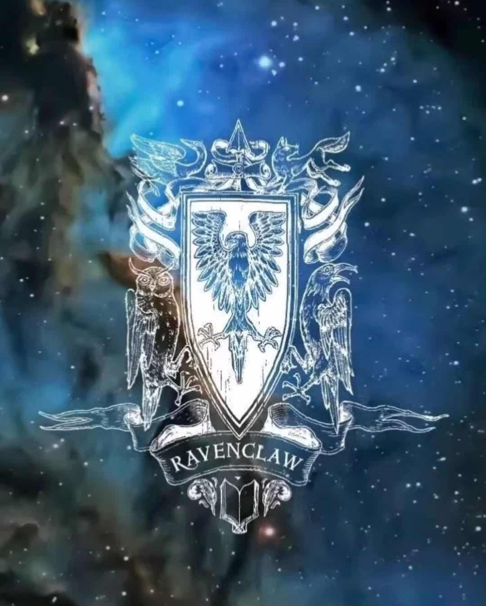

霍格沃茨四大分院
拉文克劳
院徽

分院帽：“如果你头脑精明，
你也许属于智慧的拉文克劳，
那些睿智博学的人，
总会在那里遇见他们的同道。”
“拉文克劳”直译就是“渡鸦的脚爪”，名字中的隐义是“贪婪的掠夺者”，意为对知识的渴求。
创办者：罗伊纳·拉文克劳
拉文克劳的金冕
创办者遗物：拉文克劳的冠冕（罗伊纳·拉文克劳的唯一一件遗物，她给它施了魔法，可以增加佩带者的智慧。那冠冕是一顶镶有宝石的，闪闪发光的王冠，王冠的底边上刻着拉文克劳著名的格言--"过人的智慧是人类最大的财富。"（“Wit beyond measure is man's greatest treasure.”）
幽灵：格雷女士（The Gray Lady），她是海莲娜·拉文克劳，罗伊纳·拉文克劳的女儿，曾在第七部中帮助哈利找到魂器拉文克劳的冠冕。
院长：菲利乌斯·弗利维（魔咒课教授）
塔楼位置：位于城堡的西边。拉文克劳公共休息室和宿舍的所在。
pottermore拉文克劳公共休息室
画像：骑士
口令：回答由门环提出的问题，回答正确即可通过（如：火和凤凰先有哪个？――这是一个循环，没有起点）。卡罗兄妹的哥哥曾被堵在门外。
入口：拉文克劳塔最顶端，一块老的光光的木板，上面有提问的青铜门环，回答正确后即可进入。
公共休息室：一间很大的圆形屋子，墙上开着雅致的拱形窗户，挂着蓝色和青铜色丝绸，拉文克劳学生可以从窗户看到外面美丽的风景。天花板为一穹顶，上面缀有星星，下面的深蓝色地毯上也缀有星星。房间里有桌椅、书架，门对面的壁龛中放有的罗伊纳·拉文克劳的半身白色大理石像。塑像旁边的一扇门通往上面的宿舍。
标志：鹰
代表颜色：蓝色和青铜色
学院生：卢娜·洛夫古德、秋·张、帕德玛·帕蒂尔、泰瑞·布特、斯图尔特·阿利奥拉·奎尔克、莉莎·杜平、曼蒂·布洛贺、迈克尔·科纳、安东宁·戈德斯坦
创办者
罗伊纳·拉文克劳（Rowena Ravenclaw） 文学作品《哈利·波特》中霍格沃茨魔法学校的4位创始人之一，
拉文克劳学院的奠基人。
她认为：“我们所教的学生，他们的智慧必须高人一等”。
拉文克劳
拉文克劳喜欢睿智、公正、精明、博学、 聪明、有远见、好奇心很强，喜欢钻研事物的学生。 拉文克劳美丽、有些严厉，来自宁静的河畔。她觉得头脑最聪明者最有出息。
名言：过人的聪明才智是人类最大的财富。
遗物
拉文克劳的冠冕（相传可增强佩戴者的智慧，被拉文克劳的女儿海莲娜偷走藏到阿尔巴尼亚森林里，后被伏地魔给制造成了魂器，最后由哈利以及赫敏、罗恩找到，不巧遇上了德拉科等人，在第7部中，因为争夺而被克拉布的厉火消灭）。
拉文克劳级长的欢迎辞
祝贺你！我是级长Robert Hilliard，我很高兴欢迎你加入拉文克劳学院。我们的院徽是一只鹰，高高翱翔在无人可及的巅峰；我们的颜色是天蓝和青铜；我们的公共休息室位于拉文克劳塔的顶端，藏在一扇拥有魔法门环的门背后。透过圆形公共休息室的拱状窗户，可将霍格沃茨校园尽收眼底：黑湖、禁林、魁地奇球场以及温室。其他学院无幸享此美景。
我无意浮夸，这里是最聪明的女巫和男巫生活的地方。如同我们的创立者——罗伊娜·拉文克劳，我们将学习奉为首要之能。我们不需要像其他学院那样设立隐藏的公共休息室入口。我们的公共休息室大门位于一个又长又弯的楼梯顶端，没有把手，设有一个施有魔法的鸦状青铜门环。当你敲门时，鸦环会向你提问，如果你能正确回答，你将被允许进入。将近一千年的时间里，除了拉文克劳，无人能通过这个简单的屏障。
有些一年级新生害怕鸦环的提问，不用担心。拉文克劳善于学习，你很快会学会享受鸦环设置的挑战。20个人站在公共休息室门口，试图一起解答当天的提问，这并不是罕见的事。这是认识其他年级拉文克劳学生的好机会，你可以向他们学习——不过当你忘记魁地奇运动服，需要匆忙出入时，你会觉得有点恼人。因此，我建议你在离开拉文克劳塔前，再三检查你的书包。
拉文克劳拥有另一个很酷的元素：我们的人都非常自我——一些人甚至会称他们为古怪。但天才通常都是和常人步调相异的，不像有些学院，我们认为你可以穿着任何你喜欢的服饰，相信任何你想要的东西，说任何你高兴的话。我们不会反感另类的人；相反，我们欣赏他们！
说到古怪，你会喜欢我们的院长，菲利乌斯·弗立维教授。人们经常低估他，因为他个头真的很矮小（我们认为他有精灵血统，但我们从未粗鲁的去问他），声音很尖锐，但他是这个世界上在世的最好的，学识最丰富的咒语教授。他的办公室大门总是向任何有问题的拉文克劳开放着，如果你不开心，他会放出藏在办公桌抽屉铁罐里那些美味可口的口袋小蛋糕，让他们在你面前跳舞。其实你可以装作不开心，这样就可以看到蛋糕们跳牛仔舞了，真的值得一试。
拉文克劳拥有辉煌的历史。大多数伟大的巫师发明家和革新家都是出自我们学院，包括Perpetua Fancourt，望月镜的发明者，Laverne de Montmorency，伟大的爱情魔药先锋，Ignatia Wildsmith，飞路粉的发明者。著名的拉文克劳魔法部长包括Millicent Bagnold，哈利·波特从黑魔王死咒下逃生的那晚他刚好在任，他用自己的言语维护全英国巫师的庆祝行为：“我坚称庆功会是我们不可剥夺的权力。”；还有Lorcan McLaird部长，他是一名相当聪明的巫师，但他更喜欢从魔杖尖吸出烟雾来与人交流。当然了，我早说过我们出产古怪的人。事实上，我们还向魔法界贡献了把水母当帽子戴的怪人尤里克，他是许多巫师笑话中的经典妙语。
至于我们和其他三个学院的关系：你很可能已经听说过了斯莱特林。他们不全是坏人，但在了解他们之前，你应该提高警惕。他们长期的学院传统是不惜代价的取胜——因此，请留心，特别是魁地奇比赛和考试中。格兰芬多们不差。如果说我对他们有什么意见的话，就是格兰芬多太喜欢炫耀了。他们对异类的包容性也比我们差很多；事实是他们甚至笑话一些对飘升产生兴趣的，或者是对山怪蛋的魔法功用或者蛋卜学——这是一种使用蛋来占卜的方法（你很可能已经知道了）感到好奇的拉文克劳。格兰芬多没有我们的求知欲，而对我们而言，如果你愿意整天整夜坐里公共休息室的角落里敲鸡蛋，记录下你根据蛋黄的不同降落方式而做出的预测，这完全不是一个问题，而且你很可能会发现有人愿意帮助你。 至于赫奇帕奇，没人会说他们不是友善的人。他们可以说是学校里最友善的一群人。可以这么说吧，当遇到考试中的竞争时，你们不用太担心他们。
我想就这些吧。哦，对了，我们学院的幽灵是格雷女士。其他人认为她从不说话，但她会跟拉文克劳交谈。她是鹰祖的女儿，是位很美丽的女士，据说与血人巴罗有些什么（当然我们从来不会问她）。当你迷路或者找不到东西时，她特别有用。
我肯定你们会度过一个美好的夜晚。我们的宿舍在主塔楼旁边的角楼；我们的四脚床上铺着天蓝色的丝质软被，风在窗前吹过的声音让人感到十分舒心。
我将再说一次：恭喜你成为最聪明的，最敏捷的和最有趣的霍格沃茨学院的一员。